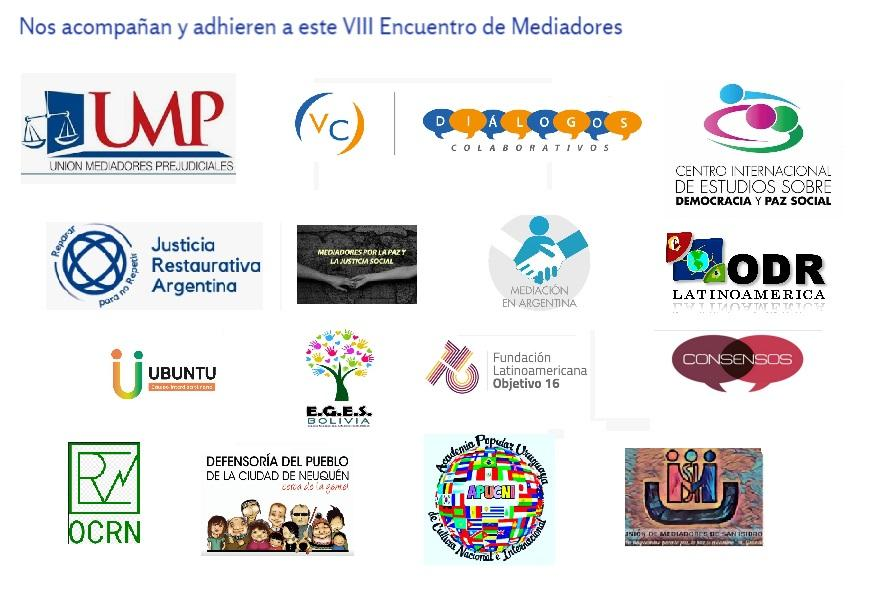

VIII Encuentro de Mediadores.
17, 18 y 19 de Diciembre de 2020
“LA MEDIACION Y EL ACCESO A JUSTICIA COMO POLITICA PUBLICA”
INSCRIBITE
Modo de trabajo
APERTURA.
Bienvenida a los participantes, explicación de la forma de trabajo y preparación de las comisiones.
TRABAJO EN COMISIONES:
Desde el año 2012 en que hicimos el primer Encuentros de Mediadores en la ciudad de Santa Teresita, nuestra manera de trabajar es en comisiones en las que se abordan distintos temas, y en las que todos los participantes tienen la posibilidad de intervenir, proponer, debatir, en un pie de igualdad, para generar diagnósticos de la situación y generar propuestas de acción. Se trabaja con un material que funciona como disparador del debate, preparado por la comisión de organización, con coordinadores que ordenan el uso de la palabra ´para posibilitar la intervención de todos. Ese material se enriquece, mejora, se adapta a las ideas del grupo y con lo que surge de ese debate, se elaboran las conclusiones de cada comisión.
PLENARIO FINAL - CIERRE
Las conclusiones de cada comisión se ponen en común en el cierre del Encuentro. Las conclusiones generales, son luego publicadas y elevadas a las autoridades que correspondan.
Comisiones
1.- Campos de Acción de la Mediación: se trabajará sobre la posibilidad de generar nuevos campos de acción, Inclusión a través de normas, como Ley de Alquileres. Volver sobre temas de Familia, Laboral, Consumo, Concursos y Quiebras, Comunitaria, etc;
2.- Honorarios y el contexto judicial: conociendo los fallos jurisprudenciales sobre el tema pensamos entre todos cómo elaborar políticas acordes para estabilizar la sustentabilidad del sistema. Ya sea charlas con Abogados, Magistrados, posible reforma legislativa, o acciones colectivas para obtener certeza de la vigencia de las Leyes y Decretos
3.- Mediación a Distancia: compartimos experiencias, fijamos tic de trabajo, corregimos problemas, estudiamos el futuro del sistema, sus bondades y la ampliación de “a distancia” con otras provincias, etc...
Programa
Jueves 17 de Diciembre de 2020:
18 horas Apertura Encuentro de Mediadores
Viernes 18 de Diciembre de 2020
9.30 a 11.30 Trabajo en Comisiones
✔ Campos de acción y materias mediables
✔Honorarios y actividad jurisdiccional
✔Mediación a distancia
14 a 16 horas Trabajo en Comisiones
✔Campos de acción y materias mediables
✔Honorarios y actividad jurisdiccional
✔ Mediación a Distancia
18 horas Mediación y acceso a Justicia, mesa de diálogo con la participación de los Dres. Gladys Stella Álvarez, María Elena Caram, Muriel Killian, Andres López y Guillermo Mario González. Moderadora: Dra Silvina Norma Caisson
Sábado 19 de Diciembre de 2020
9.30 horas Puesta en Comun de las Conclusiones del trabajo en Comisiones - Plenario Final
11 horas: La Mediación como política pública. Mesa de diálogo con la participación de los Dres Sergio Abrevaya y Alejandro Nató. Moderadora: Dra Rosario Guerrero
13 horas Cierre del Encuentro de Mediadores
Comisión Organizadora
- Enrique Laplane (LM)
- Silvina Norma Caisson (SM)
- Rosario Guerrero (SM)
- Graciela Covello (SM)
- Juan Manuel Pereyra (LZ)
- Leonardo Valsecchi (AV)
- Yolanda Gonzalez Gonzalez (TL)
- Blanca Priotti /BB)
- Evangelina Franchi (ME)
- Florencia Perez (MP)
- Paula Martinez Mayer (SM)
- Roxana Piñeiro (LZ)
- Javier Poggi (SM)
- María de Simone (LA)
- Juan Fernando Gouvert (ME)
- Sergio Ricardo Tomás (LM)

Organiza:
EMAC- Encuentro de Mediadores Asociación Civil
WHATSAPP: +54 9 11 6203-0909
Mail: encuentrodemediadores.emac@gmail.com